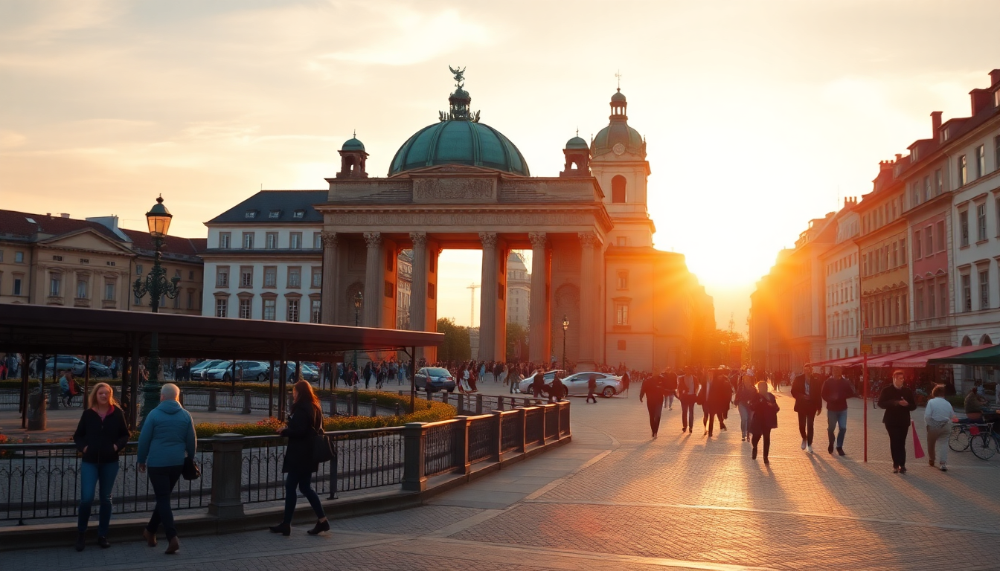

When to Visit Germany: A Month-by-Month Guide

I’ve been to Germany a half-dozen times across every season, and the “best” time really depends on what you want to do. If you’re chasing beer gardens and long daylight hours, summer is your window. But if you want to skip the crowds and save money on hotels like the Hotel Adlon Kempinski in Berlin or the Roomers in Frankfurt, shoulder seasons are where it’s at. This guide breaks down weather, crowds, and costs by month for Berlin, Munich, and Frankfurt — so you can pick the window that fits your trip.
What is the weather like in Germany by season?
Germany has a temperate seasonal climate, but it varies noticeably between cities. I’ve shivered through a Berlin February and sweated through a Munich July, and both were manageable with the right gear.
- Spring (March–May): Unpredictable. March can still feel like winter, especially in Berlin. By May, you’ll get mild days (15–20°C) perfect for walking the East Side Gallery or the Englischer Garten in Munich.
- Summer (June–August): Warm to hot, especially in Frankfurt, where the Main riverfront gets sticky. Berlin and Munich see highs around 25–30°C. Expect afternoon thunderstorms.
- Fall (September–November): September is a gem — still warm, fewer tourists. Oktoberfest crowds hit Munich hard in late September/early October. By November, it’s grey and chilly.
- Winter (December–February): Cold, dark, and wet. Berlin and Frankfurt hover around 0–5°C. Munich gets colder, sometimes dipping below freezing. Christmas markets make it worthwhile.
When is the best time to visit Berlin?
I’ve been to Berlin in every season, and I’d pick late spring (May–June) or early fall (September). The weather is comfortable for walking, the outdoor clubs like Club der Visionäre are open, and the queues at Museum Island aren’t insane.
- May–June: 15–25°C, long daylight. Perfect for biking through Tiergarten or grabbing a currywurst at Curry 36 in Kreuzberg.
- September: Still warm, fewer tourists. The Berlin Art Week scene is active, and the Tempelhofer Feld is great for picnics.
- Winter (December): Only if you want Christmas markets — the ones at Gendarmenmarkt and Charlottenburg Palace are top-notch. But it’s cold and dark by 4 PM.
When is the best time to visit Munich?
Munich has two distinct personalities: summer beer-garden season and Oktoberfest chaos. If you want the former without the latter, go June through August. If you’re here for Oktoberfest, book everything a year in advance.
- June–August: Beer gardens like the Chinesischer Turm in the Englischer Garten are buzzing. Expect crowds at the Hofbräuhaus, but it’s worth a quick stop. Temperatures hit 25–30°C.
- Late September–early October: Oktoberfest. The city is packed, hotels like the Bayerischer Hof triple in price. If you’re not into the festival, avoid this window.
- December: The Christkindlmarkt at Marienplatz is charming, but bring thermal layers.
When is the best time to visit Frankfurt?
Frankfurt is a business hub, so weekends are quieter and cheaper. I’d aim for May or September — the weather is mild, the crowds are thin, and the Römer square is pleasant without the summer heat.
- May–June: 18–25°C. Perfect for walking the Main riverbank or exploring the Sachsenhausen district for apple wine (Apfelwein) at a local pub like Zum gemalten Haus.
- September: Still warm, lower hotel rates. The Museumsuferfest (last weekend in August) sometimes spills into early September.
- Avoid July–August: It gets humid and crowded with business travelers and tourists. The Frankfurt Zoo and Palmengarten are packed.
What are the best months for low crowds and low costs?
If your budget is tight, shoulder seasons (April–May and September–October) are your sweet spot. I saved about 30% on a stay at the Motel One Berlin-Hackescher Markt in April compared to July.
- April: Still cool (10–15°C), but prices drop. Berlin’s cherry blossoms at the Berlin Wall Memorial are a nice bonus.
- October: After Oktoberfest, Munich clears out. Frankfurt’s hotels drop to off-peak rates.
- November: The cheapest month overall, but grey and rainy. Many outdoor attractions close or have reduced hours.
When should I avoid Germany for tourism?
I’d skip August if you hate crowds and high prices. It’s peak European holiday season, so Berlin and Munich are packed. Also, late December through January is bleak — cold, dark, and many restaurants close for a week after New Year’s.
- August: Expect queues at the Pergamon Museum and the Neues Museum in Berlin. Munich’s beer gardens are packed.
- Late December–January: Many shops in Frankfurt’s Zeil shopping street close early. The weather is miserable (rain or snow).
FAQ
Is Germany good to visit in winter? Yes, if you’re into Christmas markets or winter sports. The markets in Nuremberg, Dresden, and Cologne are world-famous, and Berlin’s Gendarmenmarkt is a highlight. But expect short days (sunset around 4 PM) and cold temps (0–5°C). Pack a good coat and waterproof boots.
What is the rainiest month in Germany? June tends to be the wettest, especially in Munich and Frankfurt, with afternoon thunderstorms. Berlin is slightly drier. I’ve had a few rainy days in June that ruined outdoor plans, so always have a backup indoor activity like the Deutsches Museum in Munich or the Städel Museum in Frankfurt.
When is Oktoberfest, and should I go? Oktoberfest runs from mid-September to the first Sunday in October. If you’re a beer enthusiast, it’s a bucket-list event — but it’s expensive, crowded, and requires booking hotels (like the Hotel München Palace) months ahead. If you just want a beer garden experience without the chaos, visit Munich in June or July instead.
Conclusion
- Best overall months: May, June, and September — comfortable weather, manageable crowds, and full access to outdoor attractions.
- Best for budget travelers: April, October, and November — lower hotel rates, but pack for rain or cold.
- Best for festivals: December for Christmas markets, late September for Oktoberfest (if you plan ahead).
- Worst months for crowds: August and late December — avoid unless you have a specific event in mind.
- Pro tip: Book your train tickets on Deutsche Bahn early for discounts, and consider an eSIM from Airalo for data — it’s cheaper than roaming.